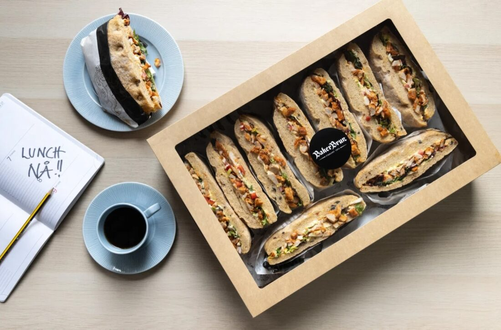

Bakeri, konditori & servering · Norge
Om Baker Brun
Baker Brun baker ferske brød, luftig gjærbakst, selskaps- og marsipankaker samt møtemat hver eneste dag med gode råvarer og ekte håndverkstradisjon.
Baker Brun bistår kunder i Norge med fagmessige leveranser innen ferske håndverksbrød og rundstykker, selskapskaker og konditorhåndverk, møtemat, påsmurt og bedriftslevering og kafé og utsalg med god atmosfære.
God bakst krever tid, kunnskap i fingrene og råvarer uten unødvendige snarveier. Våre bakere og konditorer starter tidlig hver dag slik at disken bugner av ferske varer fra vi åpner.
Enten det gjelder tirsdagsmøtet på jobben eller årets største familiedag, sørger vi for bakst som samler folk. Vi bygger videre på gode norske og europeiske bakertradisjoner tilpasset dagens smak.
«Duften av fersk gjærbakst, sprø skorpe og konditorhåndverk laget med kjærlighet.»

Vil du vite mer om hvordan vi kan hjelpe deg?
Ta kontakt for en uforpliktende samtale med våre fagfolk.
Ta kontakt